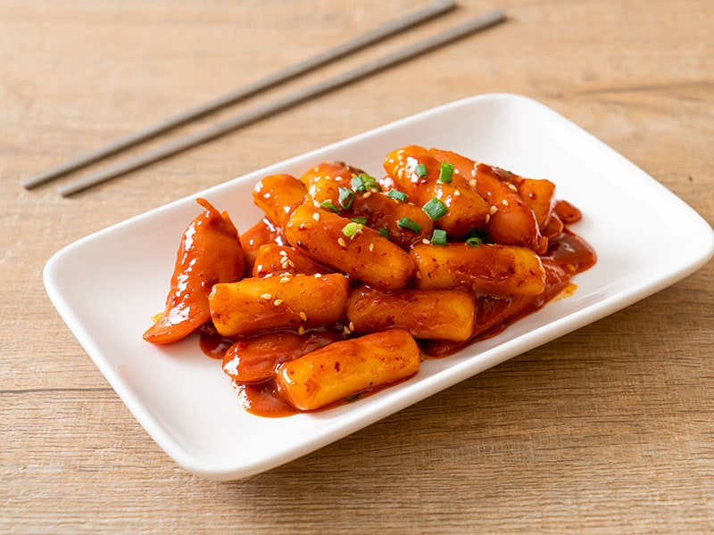
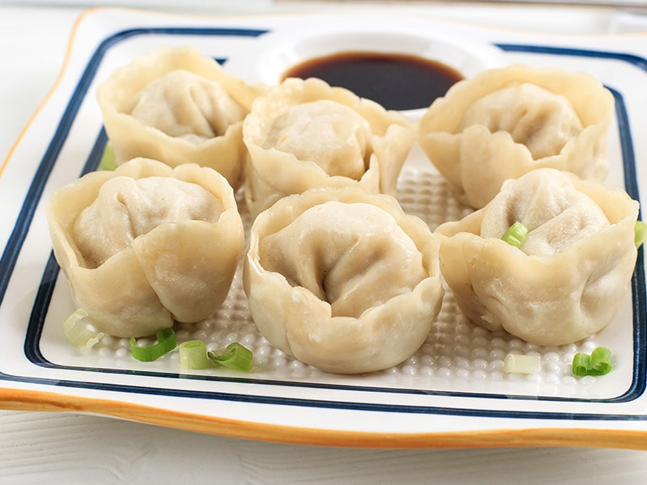
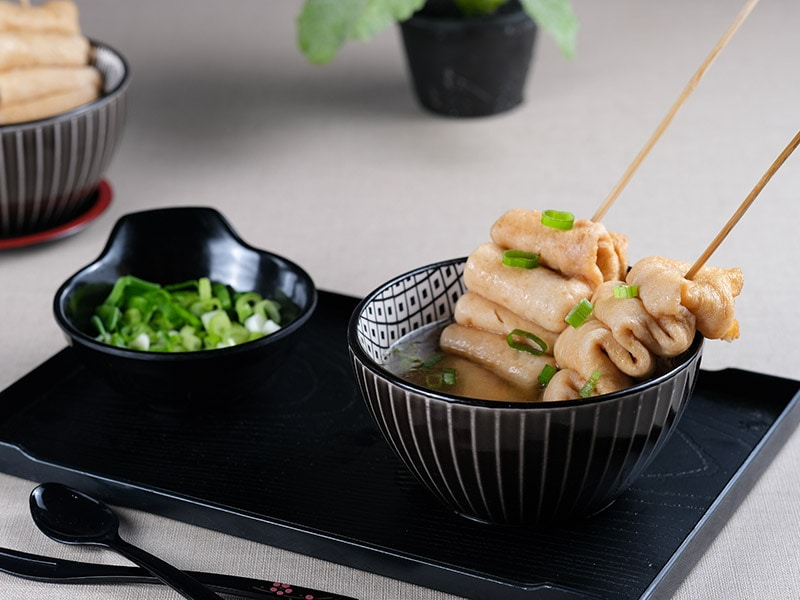
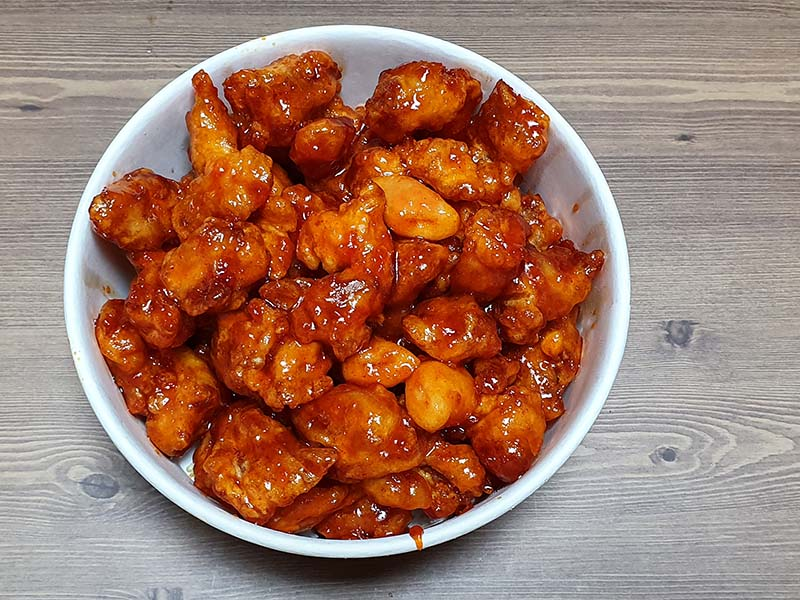

Dacă Occidentul are făină de grâu, Estul are făina de orez. Aceasta din urmă este nucleul multor delicatese coreene delicioase, inclusiv numeroase produse de tip street food. O plimbare la orice piață sud-coreeană, vă va destăinui o serie de mâncăruri delicioase făcute din acest cereale.
Sunt prăjituri de orez condimentate care îți vor stimula papilele gustative cu gustul lor intens piperat determinat de sosul chili .
Mandu este făcut din aluat, carne tocată de porc, tăiței sticlosi și condimente. Asigurați-vă că încercați si varianta cu adevărat coreeană cu umplutură de kimchi.
Vedeta felului de mâncare este Eomuk, o prăjitură de pește sau o pastă de pește măcinata si prăjită.
Puteți găti Dakgangjeong din aripioare de pui, piept sau pulpe. Înmuiați bucățile de pui într-o marinată de usturoi și ghimbir înainte de a le acoperi cu un strat subțire de cartofi răzuiți fin.
